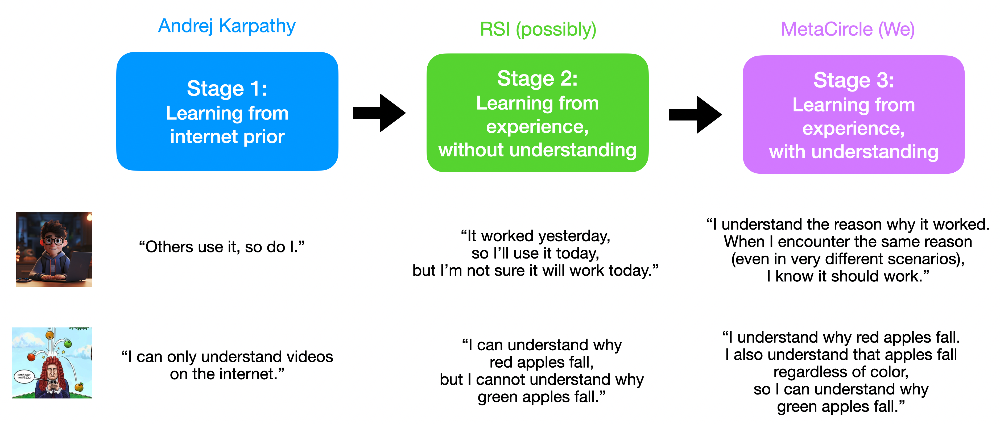
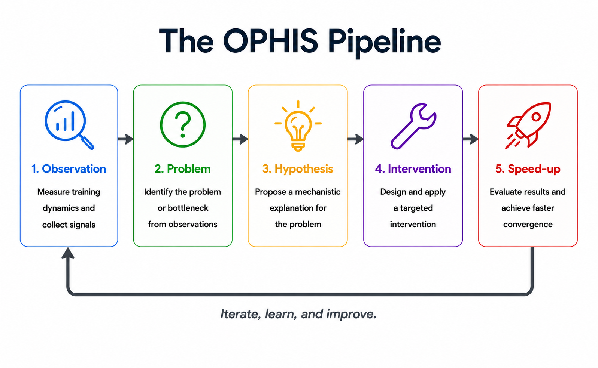
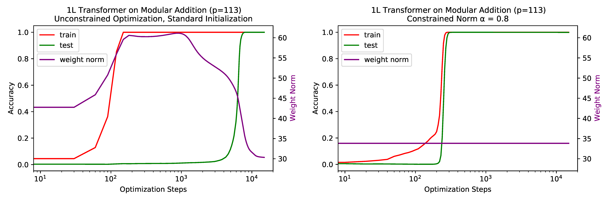
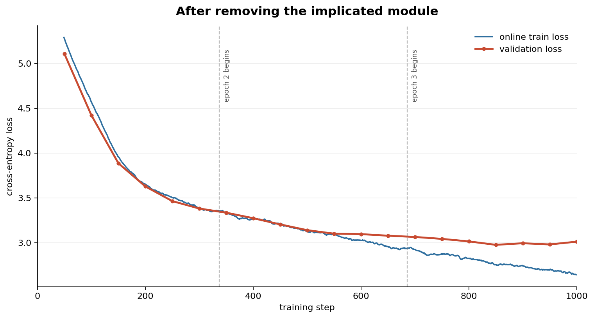

今天的自动化研究系统大多停留在试错（trial-and-error）层面：它们混合互联网先验知识，或者记住之前什么方法有效，但很少解释为什么。LLM可能推荐某个学习率，只因为它从互联网上见过这个技巧，而不是真正理解当前系统的训练动态。
MetaCircle团队提出了OPHIS：一个完全不同的自动化研究范式。它不依赖任何LLM，而是通过Observation（观察）→ Problem（定义问题）→ Hypothesis（假设）→ Intervention（干预）→ Speed-up（加速）的闭环，从训练内部动态中提取机械论理解，再将其转化为可泛化的加速技巧。
论文将自动化研究划分为三个递进阶段：
第一层：互联网先验（Karpathy路线）。LLM依赖互联网编码的集体经验。如果社区普遍推荐某种优化器、权重衰减策略或初始化方案，模型就会提出同样的方案。这能有效复用已有知识，但发现根本性新机制的能力有限。
第二层：实验统计记忆（RSI路线）。系统不仅依赖互联网知识，还记住自己的实验历史。昨天试了五种学习率都没成功，今天应该探索其他方向。这比纯互联网推理更好，但经验本身不够：根据No Free Lunch定理，一个技巧不可能在所有情况下都有效。
第三层：机械论理解（MetaCircle/OPHIS）。不仅记住什么有效、什么无效，而是理解为什么/何时有效。研究者观察训练动态，识别底层现象，提出解释，再从解释中推导干预。这就是OPHIS的核心：建立因果理解，而非记忆结果。

OPHIS将研究组织为五个连续阶段，每条成功的干预不再只是一个数据点，而是一个可以泛化到原始实验之外的机械论解释。
Observation（观察）：系统测量大量内部可观测变量：参数范数、熵类量、方差、激活统计等。这些是训练动态的原始信号。
Problem（定义问题）：分析这些可观测变量的动态，识别潜在的瓶颈。例如：权重L2范数在过拟合阶段上升，在泛化开始时下降：这揭示了隐藏的动态转变。
Hypothesis（假设）：对观察到的现象提出解释。例如：模型先过拟合，只有在逃离该状态后才开始泛化；权重范数追踪这一转变。
Intervention（干预）：从假设中推导干预策略。例如：更强的权重衰减或显式约束权重范数：这是从理解中推导出的，而不是试错。
Speed-up（加速）：干预成功加速训练，完成OPHIS闭环。

Grokking案例：在模加法Grokking任务上，基线模型在第1250步左右达到95% 测试准确率。OPHIS自动观察张量级训练动态，分析内部变量与测试精度的关系，自动提出干预方案。
结果对比：OPHIS测试了350个干预，实质性改进率72.9%，失败率仅13.7%。LLM完整基线测试了76个技巧，实质性改进率57.9%，失败率42.1%。OPHIS不仅在成功率上大幅领先，失败率仅为LLM基线的三分之一。
NanoGPT案例：在更复杂的GPT-2规模训练上，OPHIS同样超越了RSI的结果。更重要的是，OPHIS在NanoGPT训练中发现了「forking」现象：验证损失突然上升而训练损失持续下降，呈现一个「叉子」形状的分离。
这个发现不是预设目标，而是OPHIS在自主探索中意外观察到的。系统通过分析约900条观测曲线，将问题定位到架构中的特定模块，并通过组件消融完全消除了该问题。这展示了OPHIS模拟好奇心驱动的科学发现的能力。


当前主流的自动化研究完全依赖LLM + coding agent的路线。OPHIS选择了一条完全不同的路径：完全基于对训练动态的机械论分析，不涉及任何LLM。
这背后的信念是：LLM虽然是优秀的执行者，但没有好的研究品味。它们从互联网记忆中提取技巧，但不理解训练动态的底层机制。OPHIS则像人类研究者一样，通过观察训练动态、提出假设、验证假设来推进研究。
两种路线是互补的。LLM路线擅长复用和组合已有知识，OPHIS路线擅长发现新机制和新现象。未来的自动化研究系统可能会将两者结合：用LLM加速执行，用OPHIS保证深度。
参考：https://meta-circle.com/blog/ophis-a-new-paradigm-for-autoresearch